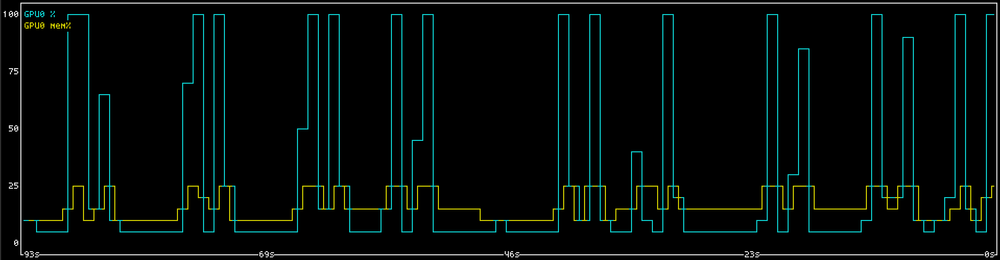
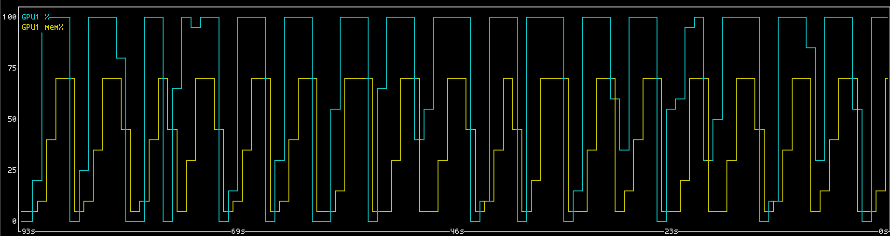

How to keep autoresearch agents from stepping on each other's toes.
Autoresearch loops are great. But naive loops with one agent per GPU face hardware utilization issues. The agent spends time thinking and doing other things, so cannot keep the GPU busy 100% of the time. Ideally you want to be running multiple agents per GPU. This achieves better hardware utilization, but creates some very obvious problems.
The naive solution is to give the agent a tool or command to run,
which gives them exclusive access to a GPU. Tell the agent which GPU it
should queue on, and tell it to pass CUDA_VISIBLE_DEVICES
or similar to the queue command. Then the queue command does the
bookkeeping necessary to keep the GPU busy while preventing overlap.
This is a step in the right direction, but again there are problems.
Who is to say the agent will actually use your queue command? Simply not using it allows the agent to skip the queue. And if you instead run every command through this queue command via the harness, what about long running commands that don't use the GPU? Are you going to let the GPU sit idle all that time? I don't think either is a good idea. A GPU queue should only queue GPU code. And it should not require your agents to cooperate.


This is what I have accomplished in libgpumutex. You can
pip install gpumutex and use it right now. The single C
file is also available on Github.
Before any code runs on an Nvidia GPU, the calling process must first
initialize the driver API with cuInit(). This is where we
step in. If we can intercept cuInit(), we can make it
reserve a GPU, and set CUDA_VISIBLE_DEVICES right before
CUDA actually starts using it.
To do this, we must intercept the mechanism that the process uses to
obtain a function pointer to cuInit(). There are three
different ways this might happen.
You're fucked. But luckily nobody packages CUDA code this way. Nvidia
does ship libcudart_static.a with CUDA, but I don't think
anybody actually uses it. The resulting executable would not be portable
between CUDA versions, or between machines. So although we have no
answer here, we also do not have to worry about it.
The dynamic linker on Linux (ld.so) exposes an
environment variable, LD_PRELOAD, which you can use to
inject your own library, the symbols from which get loaded first. So if
we inject our own library, libgpumutex.so, when the process
tries to resolve the function pointer to cuInit(), it
resolves to our cuInit() from libgpumutex.so.
Then this fake cuInit() calls the real
cuInit() after waiting on an available GPU.
Processes can also read and run code off the disk by calling
dlopen(). When they do this it does not consult
LD_PRELOAD. dlopen() is a lower level thing,
it just maps the code from disk into executable memory pages. To obtain
a function from the loaded library, the process calls
dlsym(), which looks the symbol up by name in the library's
dynamic symbol table and returns its address, which the processor can
then jump to. Unfortunately, this bypasses LD_PRELOAD
entirely, which works through replacing addresses in the process's
Global Offset Table (GOT).
Luckily, dlopen() and dlsym() are
themselves provided by libc.so.6. For a few reasons, libc
is almost always dynamically linked. This is very beneficial to us. In
our LD_PRELOAD library we can also intercept calls to
dlsym(), check if they are loading cuInit()
from libcuda.so.1, and have it return our wrapped
cuInit(), the one which waits for an available GPU if they
are before proceeding. This covers the other way a pointer to
cuInit() could be obtained by processes which the agent
spawns with tool calls.
Intriguingly though, Nvidia's runtime API
(libcudart.so.13, not the driver API
libcuda.so.1) does not always depend on
dlsym(). It calls different functions
(cuGetProcAddress(), cuGetProcAddress_v2())
from the driver API which similarly bypass the Global Offset Table to
resolve symbols, like dlsym() does, but through libcuda's
own table lookup. We must override those functions too.
To modify the behavior of cuInit(), we need to set
CUDA_VISIBLE_DEVICES. We can do that from C, simply call
setenv("CUDA_VISIBLE_DEVICES", devices, 1);. That's
easy.
But suppose we're trying to sandbox a python process. Suppose that
python process calls the CUDA drivers (cuInit()), then
returns to python to spawn a subprocess. This could be a problem,
because although our environment variables did get edited by
setenv() on the operating system / C side, they did not get
edited on the python side. Our os.environ did not get
updated. We're going to have to fix that.
But we're not writing a python library. We're writing a C library.
How can we actually update
os.environ["CUDA_VISIBLE_DEVICES"]?
We must reach once again inside the address space of our own running
executable. Specifically, we check to see if we've loaded libpython. If
we haven't, then this is not a Python process, and there is no problem
to solve. If we have loaded libpython though, we can resolve symbols
from it, and use them to edit os.environ.
Notably though, we do not actually need to link against libpython. We don't need the header files either, because libpython has a stable ABI.
With that, we finally have the solution we were looking for. We can
give arbitrary processes exclusive access to GPUs, without having to
edit their code, and make them wait in line. There are some things I
didn't mention, like how I implemented a fair process queue system with
flock(), but in case you're wondering about that you can
read the code.
You can find the code at https://github.com/apaz-cli/libgpumutex.
The package is on PyPI. Install with
pip install gpumutex.
@misc{pazdera2026ldpreload,
author = {Pazdera, Aaron/Ana},
title = {Safe Speedy Kernel Autoresearch with LD_PRELOAD},
year = {2026},
url = {https://apaz-cli.github.io/blog/LD_PRELOAD.html}
}